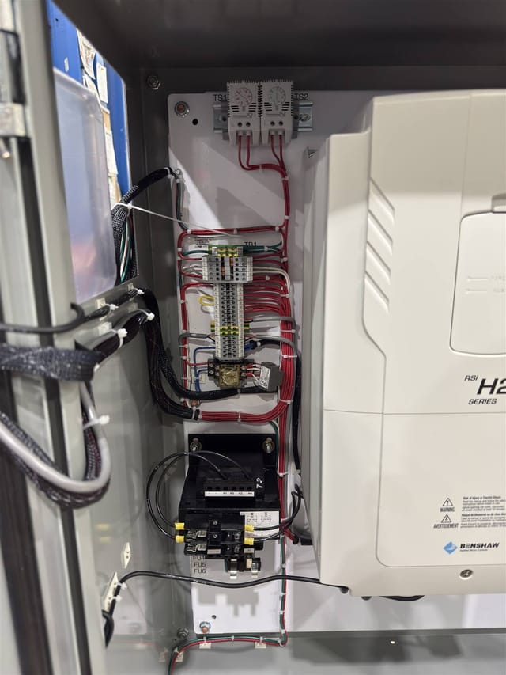
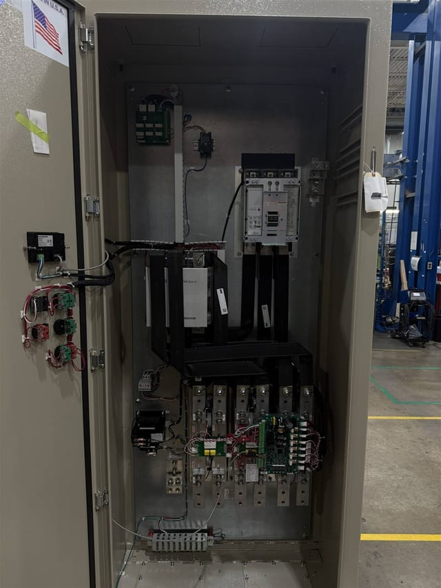
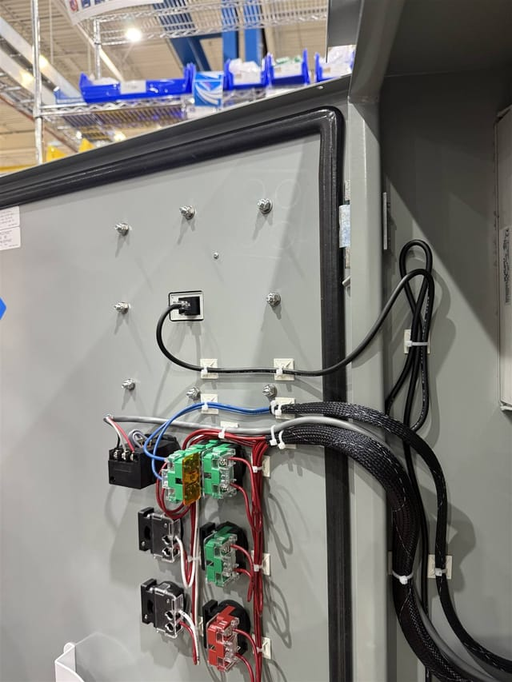
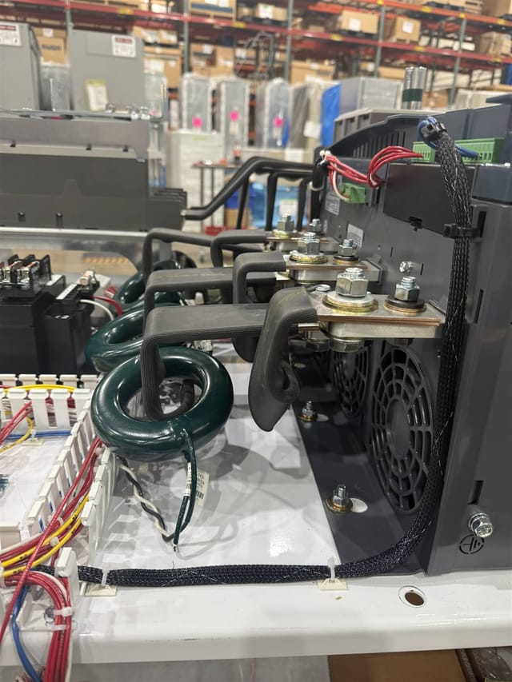
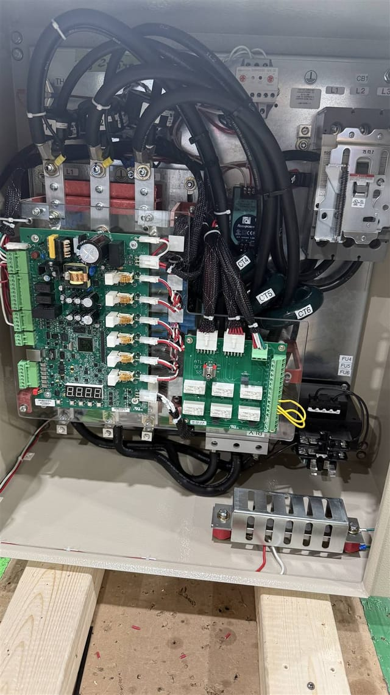
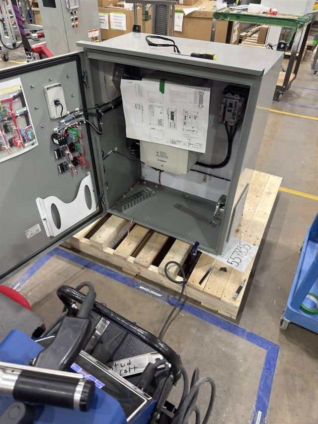
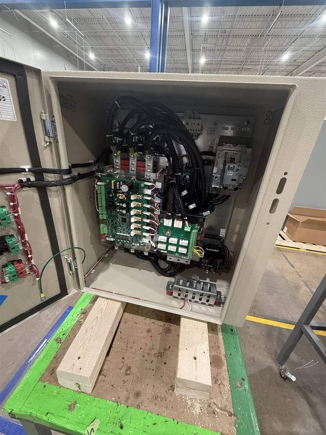
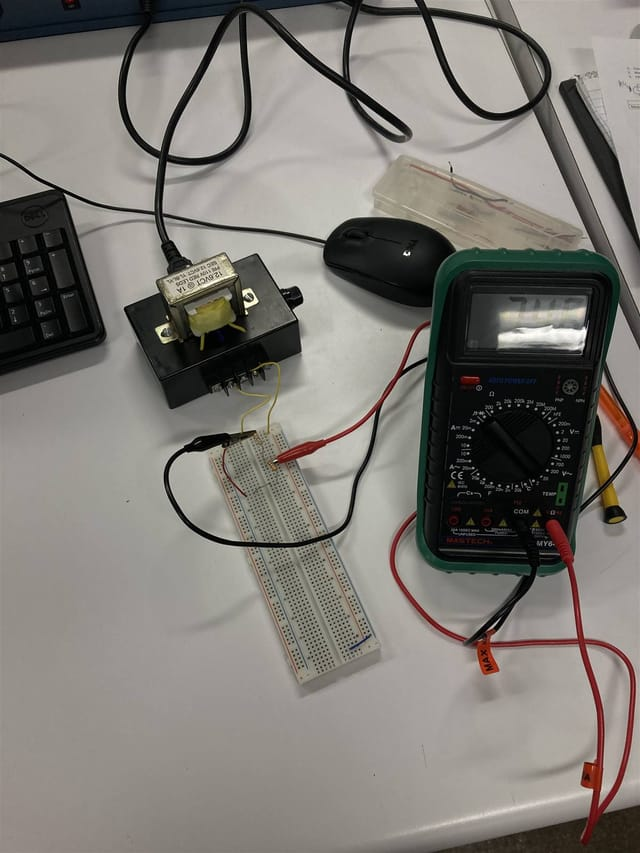
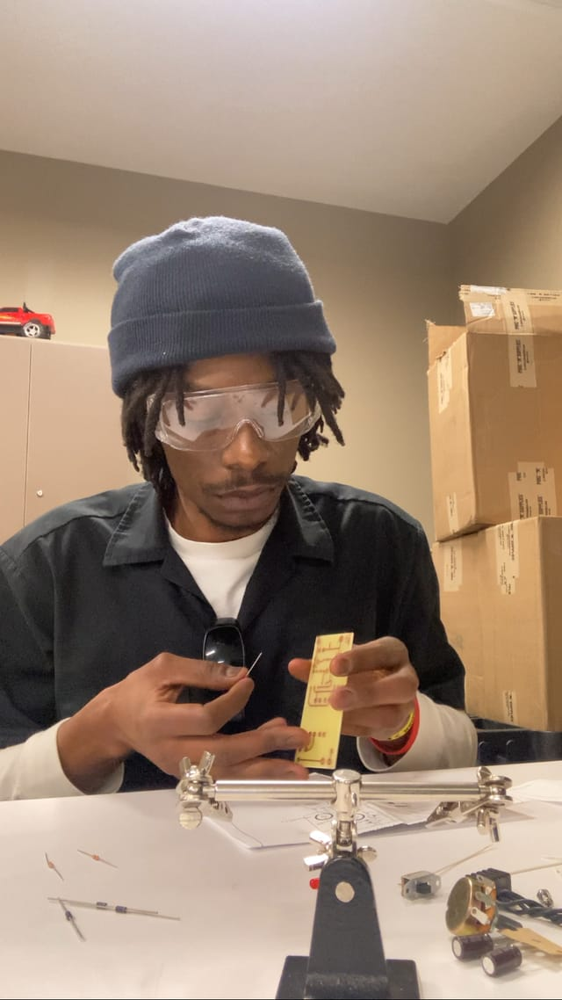

Profil de direction
Jonathan Sumaili
Fondateur & Directeur Général
Jonathan Sumaili porte la vision stratégique et le développement de SUJO Engineering Consulting SARL. Son parcours couvre le génie informatique et électronique, le contrôle moteur industriel, l’analyse de solutions techniques et l’ingénierie technico-commerciale.
Il intervient directement dans la définition des besoins clients, l’évaluation des solutions industrielles, la coordination des dossiers techniques et le développement des partenariats qui permettent des réponses adaptées aux contraintes de terrain.

Parcours
De l’atelier à la direction
-
Industrie métallurgique — actuel
Ingénieur technico-commercial
Conseille des clients industriels sur la sélection d’équipements et les spécifications techniques, en traduisant des exigences d’ingénierie complexes en solutions pratiques et défendables sur le plan du coût.
-
Contrôle moteur industriel
Ingénieur électromécanicien
Assemblage, câblage et test de systèmes de contrôle moteur industriels : variateurs de fréquence, démarreurs progressifs, étages de puissance SCR et armoires de commande sur mesure.
-
Penn West University
Génie informatique & électronique
Double formation d’ingénieur couvrant les systèmes embarqués, la conception de circuits, l’électronique de puissance et le logiciel — l’ossature analytique de la méthode de conseil SUJO.
Travail de terrain
Dans l’atelier
Photographies réelles de travaux de contrôle moteur industriel : armoires de variateurs, démarreurs progressifs, câblage de puissance et ensembles de commande.
-

Armoire de variateur de fréquence en cours d’installation. -

Assemblage d’une armoire de contrôle moteur. -
Étage de puissance SCR d’un démarreur progressif, phases raccordées. -
Câblage de commande : borniers sur rail DIN et relais. -

Câblage de porte d’armoire : voyants et commandes opérateur. -
Distribution de puissance : porte-fusibles et raccordements de commande. -

Section puissance : jeux de barres et transformateurs de courant. -

Cartes de commande et relais dans la section contrôle d’un démarreur. -

Montage de coffret sur plan de câblage. -

Usinage et préparation d’un coffret électrique. -

Banc d’électronique : prototypage d’alimentation et mesures. -

Assemblage de circuit imprimé sur établi, avec lunettes de protection.
Mettre cette expérience au service de votre projet
Transmettez-nous une pièce à identifier, une machine ou une installation à fournir, un budget à construire ou un projet à cadrer. Nous revenons vers vous avec des questions de clarification, une proposition ou une offre formelle.